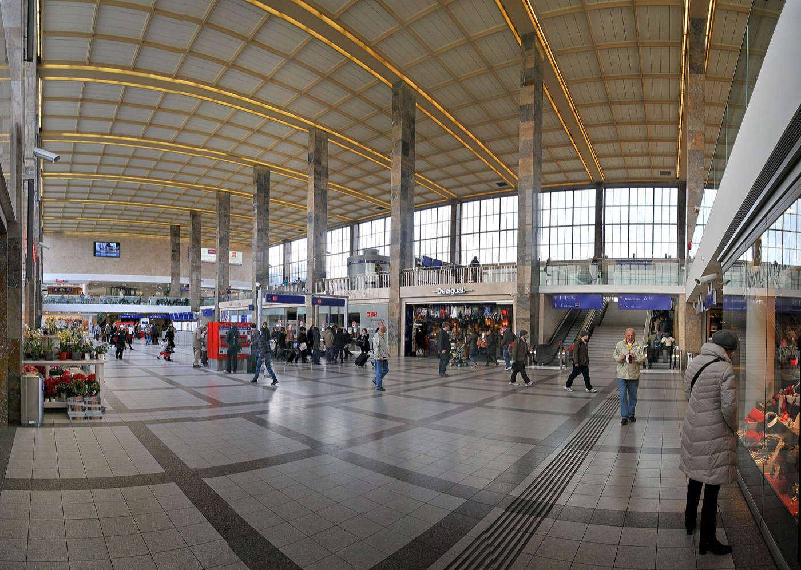
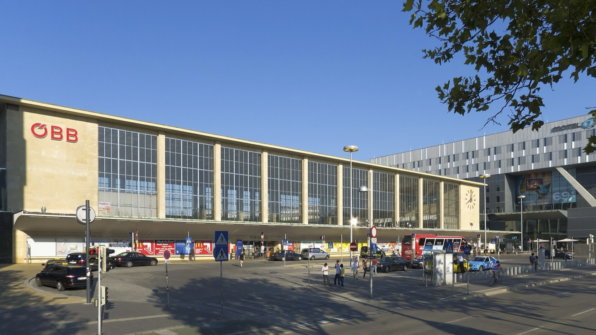
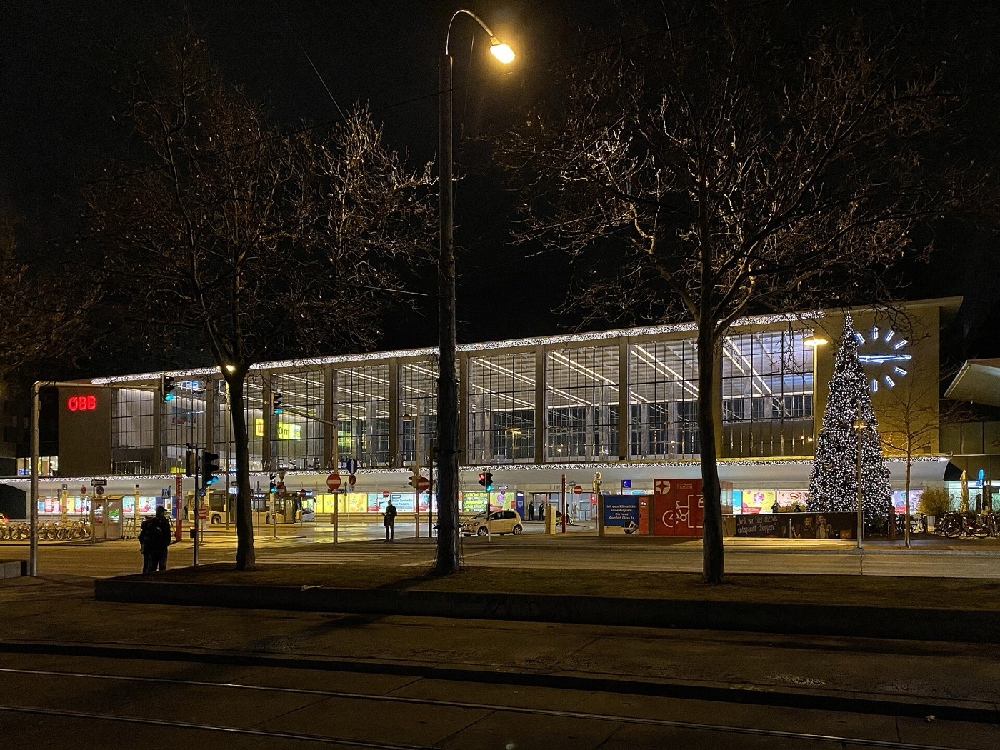
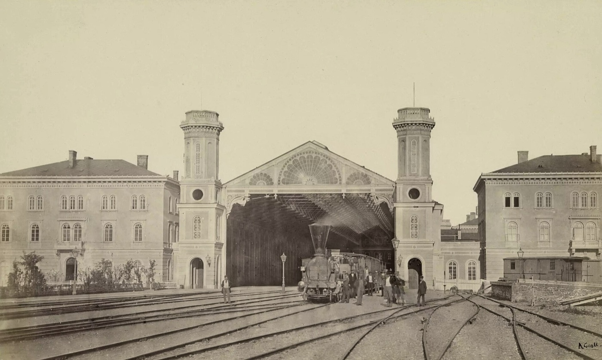
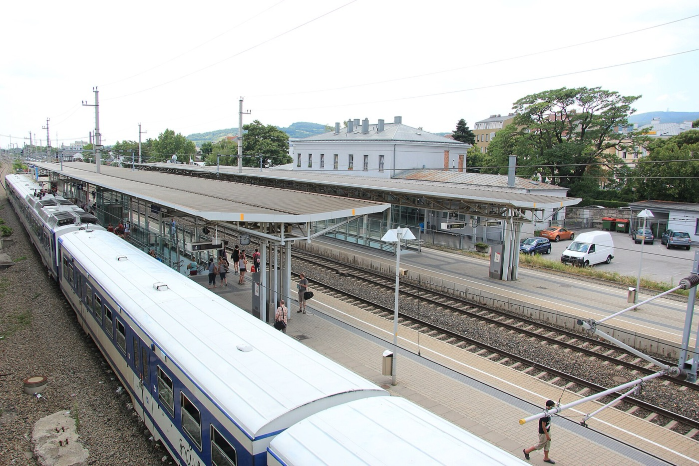
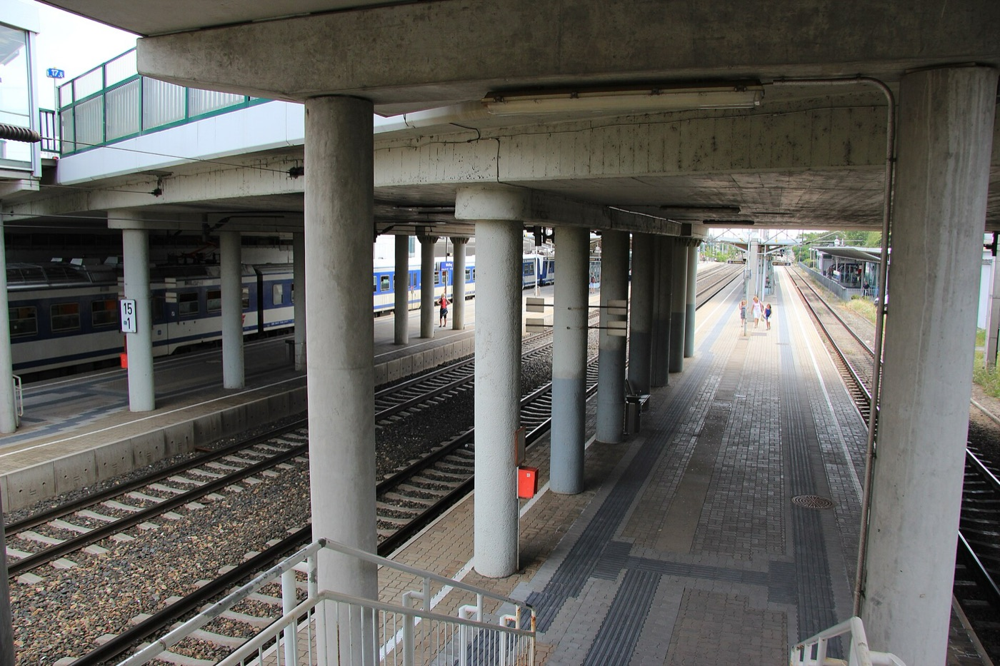
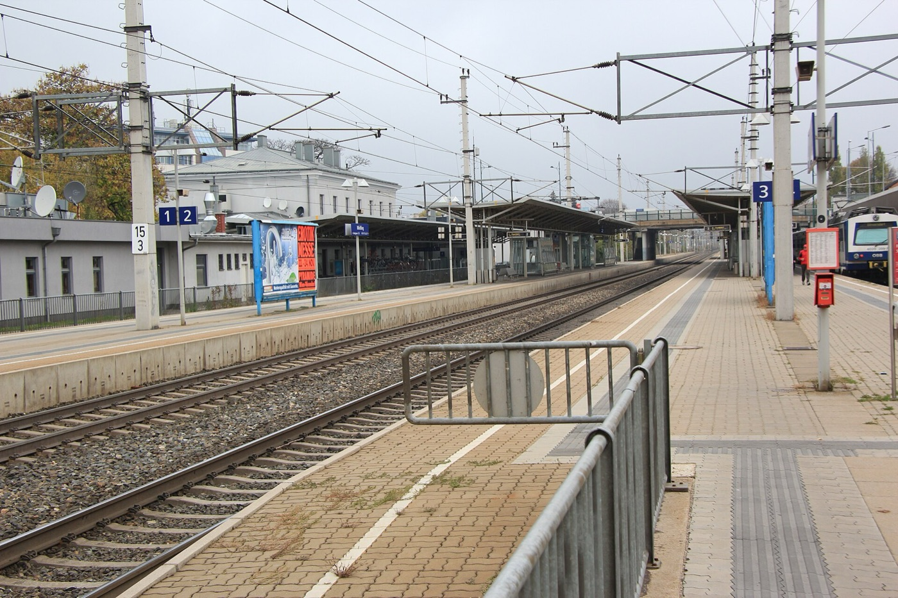
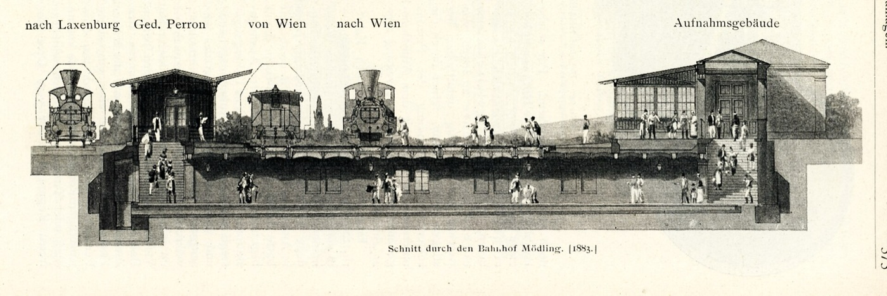

Кандидаты Фото Таблица Вердикт
Независимое исследование · Вена · октябрь 2026
Где мужу ночевать: Westbahnhof или Mödling
Сравнительная характеристика двух вокзалов для взрослого мужчины, который сегодня, возможно, домой не пойдёт. Восемь критериев, взвешенная оценка, итоговая рекомендация.
Westbahnhof 31 балл из 80
Mödling 43 балла из 80
Отрыв лидера 12 баллов
Фото в досье 8 кадров
Кандидаты
Столичный размах против провинциального уюта
Большой город, большие возможности
Вокзал с историей с 1858 года, внутри торговый центр, рядом Мариахильферштрассе, под землёй U3 и U6.
Еда и кофе в шаговой доступности до последнего.
Метро рядом: утром быстро исчезнуть с места ночлега.
Анонимность: в толпе никто не спросит, почему ты тут.
Минус: та же толпа, и не вся она спит.
Минус: охрана видела всё и тебя тоже увидит.
vs
Тихий городок у Венского леса
Станция на Южной линии, в Мёдлинге когда-то жил Бетховен. Тоже, кстати, сложный был человек.
Тихо: ночью на перроне только ты и совесть.
Свежий воздух с Венского леса, утром можно в поход.
Культурный бонус: ночевать там, где Бетховен работал над «Торжественной мессой».
Минус: ночью поесть особенно негде.
Минус: в маленьком городе тебя запомнят.
Фотодосье · Westbahnhof
Westbahnhof: где тут прилечь

Кассовый зал. Потолок высокий, пол каменный, лавочек малоФото: Friedrich Böhringer, CC BY-SA 3.0 AT 
Фасад днём: вид на ночлег снаружиФото: Gugerell, CC0 
Так он выглядит в рабочее время экспертаФото: Funke, CC BY-SA 4.0

1860 год. Тогда тоже кто-то ночевал, но об этом молчатФото: Andreas Groll, общественное достояние
Фотодосье · Mödling
Mödling: тишина и перроны

Общий план: перроны, навесы, на горизонте Венский лесФото: Karl Gruber, CC BY 3.0 AT 
Перрон под переходом: крыша над головой естьФото: Karl Gruber, CC BY 3.0 AT 
Пустой перрон. Ни души, ни ларькаФото: Karl Gruber, CC BY-SA 3.0 AT

Разрез вокзала, 1883 год: эксперт изучил планировку заранееНеизвестный автор, общественное достояние
Методика
Восемь критериев, десять баллов каждый
Критерий Комментарий эксперта West Mödling
Тишина Westbahnhof не спит, Мёдлинг спит раньше тебя 2 8 Еда ночью В Мёдлинге после полуночи только шум листвы 6 2 Лавочка Обе спроектированы так, чтобы на них не спали 3 3 Соседи по ночлегу В столице их больше и они разговорчивее 2 7 Безопасность Мёдлинг: самая большая угроза — утка 4 7 Утро Вид на Венский лес против вида на торговый центр 3 8 Культура Бетховен против фуд-корта 4 6 Путь домой с повинной Из центра быстрее, но успеешь меньше обдумать 7 2 Итого из 80 31 43
Вердикт
По баллам побеждает Мёдлинг
Для ночлега Мёдлинг надёжнее: тихо, безопасно, крыша над перроном, а утром Венский лес и хорошая дорога, на которой можно всё обдумать. Westbahnhof выигрывает едой и метро, но проигрывает по тишине и соседям.
Westbahnhof стоит выбирать, только если очень хочется есть и совсем не хочется думать. Во всех остальных случаях билет до Мёдлинга.
Рекомендация эксперта: брать S-Bahn на юг и занимать лавочку под переходом.
сейчас
Итог: Mödling, 43 против 31
Мёдлинг берёт пять критериев из восьми, по лавочкам ничья. Westbahnhof забирает только еду ночью и дорогу обратно.